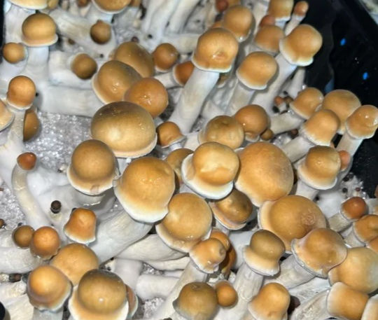

Популярные сорта
Albino A+
Эстетика и мощное воздействие. Подходит для более глубоких и визуально насыщенных опытов.

B+
Яркие визуальные эффекты, лёгкий вход. Отлично подходит для новичков и любителей ярких переживаний.

Golden Teacher
Для духовного опыта, мягкое визуальное воздействие. Это один из самых популярных сортов для первого опыта.

Mazatapec
Подходит для новичков, гармоничные ощущения. Прекрасно подходит для глубоких размышлений и саморазвития.

Penis Envy
Один из самых сильных сортов, с глубокими психоделическими эффектами. Подходит для более опытных пользователей.
